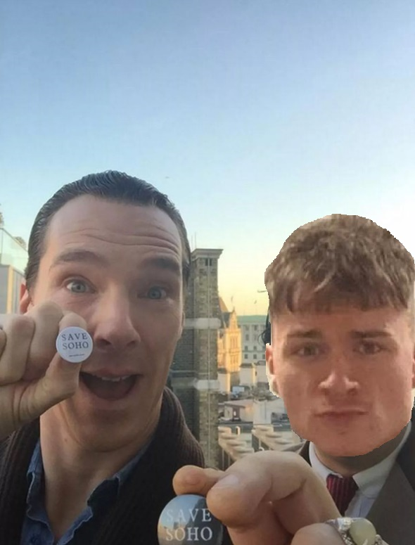
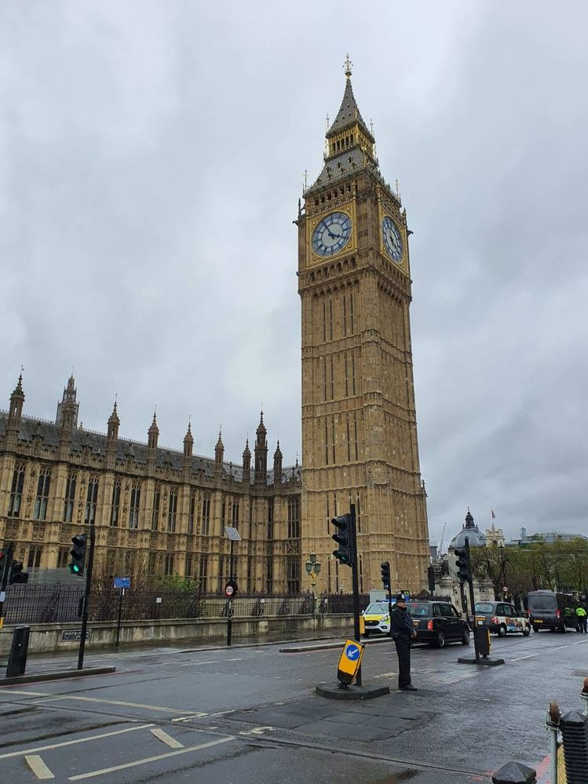
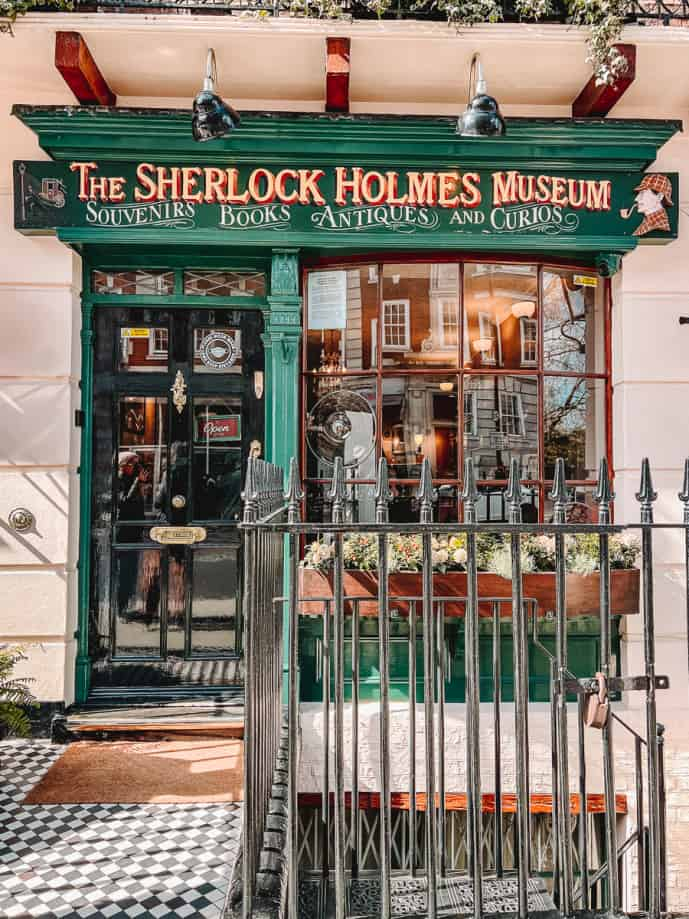

LONDYN
Swoją podróż rozpocząłem w Londynie. Wiedziałem że przez dynamiczną formę mojego planu dotyczącego wycieczki, nie mam zbyt wiele czasu, dlatego postanowiłem działać jak najszybciej. W pośpiechu do centrum Londynu, zauważyłem że gdzieś wypadła mi moja torba z paszportem i innymi dokumentami. Bez nich cała dalsza podróż stała pod znakiem zapytania. Zacząłem jej szukać jak szalony, aż nagle zobaczyłem że moją torbe ma Benedict Cumberbatch! Nie mogłem uwierzyć własnym oczom, gdy zobaczyłem słynnego aktora stojącego w tłumie ludzi. Z żarliwością, jaką zwykle przejawiałem tylko w poszukiwaniu zagubionej torby, podbiegłem do niego i poprosiłem o zdjęcie. Był niezwykle uprzejmy i zgodził się bez wahania.
Po tym krótkim, ale ekscytującym epizodzie, zdecydowałem się odwiedzić Big Ben. Spacerując wśród tłumu turystów, próbowałem opanować dreszcz emocji po spotkaniu z Cumberbatchem. Widok zegara zamglił mi myśli i pozwolił mi na chwilę oderwać się od codzienności i zanurzyć się w magicznym klimacie Londynu
W miarę jak opuszczałem tłumy turystów gromadzących się wokół Big Bena, poczułem lekkie ukłucie niepokoju w żołądku. Mimo fascynacji, jaką budził we mnie widok tego monumentalnego zegara, myśli wracały do mojej zgubionej torby. Bez dokumentów podróżnych czekał mnie prawdziwy kłopot, a niecierpliwość do dalszego zwiedzania Londynu malała w miarę jak godziny mijały. Postanowiłem więc poświęcić chwilę na refleksję nad tym, co mogło pójść nie tak i jak znaleźć rozwiązanie tej trudnej sytuacji.
W międzyczasie, na mojej drodze znalazł się jeden z tych uroczych londyńskich pubów. Z nieśmiałością weszłem do środka, poszukując chwili wytchnienia i możliwości skupienia myśli. Wnętrze knajpy przywitało mnie ciepłą atmosferą, pełną zapachu tradycyjnych angielskich potraw i dźwięków rozmów miejscowych. Usiadłem przy barze, zamawiając klasyczne fish and chips, czując, jak powoli ulatnia się napięcie związane z zaginioną torbą. Może właśnie ta chwila spokoju i posiłku pozwoli mi spojrzeć na sytuację z nowej perspektywy?
Po opuszczeniu pubu, zdecydowałem się na powrót do Baker Street. Mimo że wcześniej nie udało mi się tam znaleźć torby, wciąż trzymałem nadzieję, że może ktoś tam ją znalazł i oddał w odpowiednie ręce. Chociaż wątpiłem, że tak się stanie, każda kropla nadziei była teraz cenna.
Niestety, gdy dotarłem na Baker Street, moje oczekiwania szybko zostały rozwiane. Mimo starannych poszukiwań i rozmów z lokalnymi mieszkańcami, nie odnalazłem śladu po mojej torbie. Z każdą minutą moja frustracja rosła, a poczucie beznadziejności coraz bardziej się nasilało. Wiedziałem, że muszę podjąć jakieś kroki, zanim stracę całkowicie panowanie nad sytuacją.
Zdecydowałem się więc skontaktować z lokalnym biurem turystycznym, licząc na pomoc w odzyskaniu zgubionej torby. Choć wiedziałem, że szanse są niewielkie, postanowiłem podjąć próbę. Po kilku godzinach rozmów i sprawdzania różnych możliwości, otrzymałem jednak wiadomość, której się nie spodziewałem...
Właściciel jednego z pobliskich sklepów skontaktował się z biurem turystycznym, zgłaszając znalezienie torby. Z ogromnym ulgą i wdzięcznością odebrałem ją z powrotem, nie mogąc uwierzyć w ten szczęśliwy zwrot wydarzeń. Właściciel sklepu okazał się być niesamowicie uczynny, a w torbie zastałem wszystkie dokumenty nietknięte.
Znalezienie torby przywróciło mi wiarę w dobroć ludzką i sprawiło, że moja dalsza podróż mogła kontynuować się bez przeszkód. Ze względu na to nieoczekiwane wydarzenie, zdecydowałem się jeszcze trochę pozostać w Londynie, ciesząc się jej urokami i eksplorując kolejne zakątki miasta.
Jednak czas nieubłaganie upływał, a ja musiałem wrócić na lotnisko, by kontynuować swoją podróż. Z mieszanką radości, wdzięczności i lekkiego smutku opuściłem Londyn, obiecując sobie, że kiedyś wrócę, by odkrywać więcej tajemnic tego magicznego miasta. Ale na razie czekał mnie kolejny cel - Paryż!
Więcej zdjęć z Londynu jest dostępne w Galerii